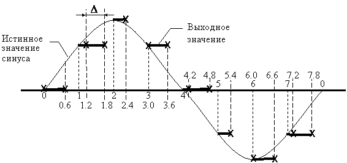

Все табличные методы используют таблицу синуса для углов от 0 до 360° длиной N отсчетов.
Данные такой таблицы позволяют получить точные значения синуса с относительными частотами wk = 2Pk/N кратными минимальной частоте (частоте первой гармоники) w1 = 2P/N, где k – номер гармоники, равный шагу в таблице (целое число).
Но данная таблица позволяет также с некоторым приближением сформировать синусоидальный сигнал с частотой не кратной w1. Используя индекс в таблице как угол и параметр Δ (действительное число) как величину шага, прямой табличный метод может быть записан в виде выражения:
S[Int{mod(Δ·n,N)}] для n = 1, 2, 3, 4, … |
где Int(a) – целая часть от числа a, mod(a,b) – остаток при делении нацело a/b (т.е. значение в интервале от 0 до N-1).
Это можно проиллюстрировать рисунком 1.1:

Рисунок 1.1 – Синусоида с дробным шагом аргумента
Реальная частота формируемого сигнала f зависит от интервала дискретизации t и величины шага Δ и определяется выражением:
f = Δ / (t·N) [Hz]
Следует помнить, что согласно теореме Котельникова Δ £ N/2 .
На рисунке N = 8, Δ = 0.6 и если t = 0.000125 с, то частота сигнала будет равна:
f = 0.6 / (8·0.000125) Hz = 600 Hz
Для удобства вычислений аргумент рекомендуется хранить в аккумуляторе В таким образом, что бы целая часть аргумента располагалась в старшей части аккумулятора.
Недостатком метода являются довольно большие нелинейные искажения, возникающие из-за того, что энергия сигнала распределяется между основной гармоникой с частотой f и гармоническими (nf) и субгармоническими (nf/m) составляющими (где n и m - целые числа).